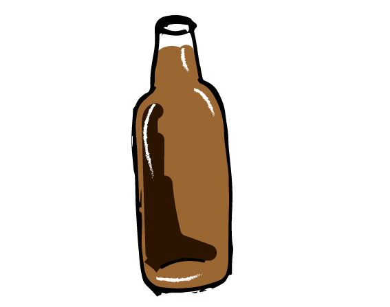
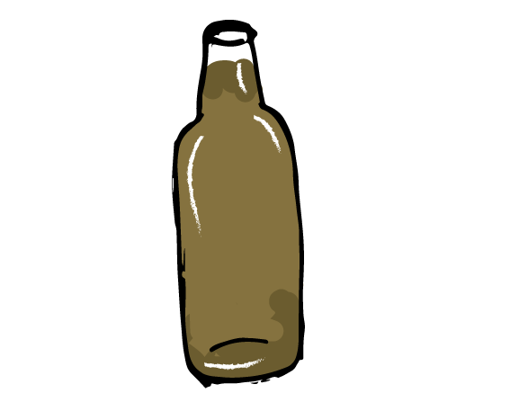
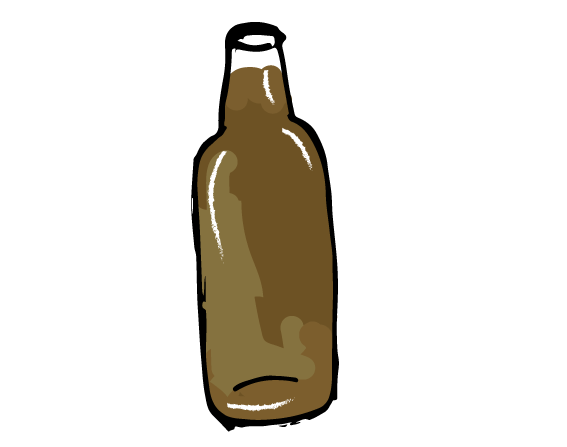
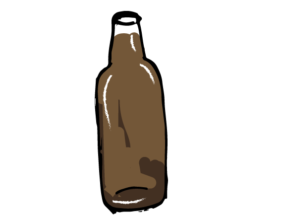

Our Beers
Year Round

Artemis Blonde
“Over the shadowy hills and windy peaks she draws her golden bow, rejoicing in the chase,
and sends out grievous shafts. The tops of the high mountains tremble and the tangled wood
echoes awesomely with the outcry of beasts: earthquakes and the sea also where fishes shoal…”-Homer
Artemis is a goddess. The goddess of the forest and the hunt, ruler of the stormy mountains. The daughter of Zeus and twin of Apollo. From her noble beginnings she ascended to become one of the most revered figures of Greece, and her temple is one of the wonders of the world.
With a crystal clear blonde body and fluffy white head, her effervescence emanates as she quenches your thirst and caresses your tongue with mild notes of Belma and Zythos and a delicate malt profile. Her warrior spirit can be experienced in the mild bitterness that is perfectly balanced with the refreshing, honey-like sweetness. Experience her for yourself. You will know the purity of the noble-born.
- Vital Statistics:
- OG: 10 degrees Plato
- ABV: 4.2%
- Malts: American Two-Row, Malted Wheat, German Vienna, Dextrine Malt
- Hops: Warrior, Belma, Zythos
- IBU: 25

Sacred Heart IPA
“Rebels are we,
though heavy our hearts shall always be…
and no ball or chain, no prison shall keep;
we’re the Rebels of the Sacred Heart.”
–Flogging Molly
Sacred Heart IPA pays homage to the past while redefining the future. Though classed as an East Coast IPA, it is both balanced and bitter, both tropical and satisfying. Featuring late additions of a brand-new hop, Belma, from Puterbaugh Farms, that gives a massive pineapple and tropical character, Sacred Heart is then double dry hopped with Zythos and Centennial for a huge, juicy hop flavor that will satisfy the most hardcore of hopheads while maintaining an approachability that even a new craft beer drinker can enjoy.
A six-step mash lends a ridiculously complex malt backdrop to the main event: the hops. The glorious Tiger Flower that none of us can get enough of. With a clean and dry finish, Sacred Heart will leave you wanting to sip, just once more…
- Vital Statistics:
- OG: 18 degrees Plato
- ABV: 7.2%
- Malts: American Two-Row, German Vienna, Dextrine Malt, Crystal 60
- Hops: Warrior, Belma, Centennial, Zythos
- IBU: 75

Medusa Stout
“Minerva, her unjust wrath aflame,
smote these locks once gold and fair
Poseidon’s lust my fate hath sealed
Nay love, but ever to ensnare.”
Medusa. That evil creature with snakes instead of hair, slithering towards you with lithe malice, ever wanting to crush you in her cold embrace. Sweet and silky, the seductress uses the dark arts of chocolate malt and roasted barley to give your palate a ravishing experience that you will not soon forget.
By utilizing advanced mashing techniques rather than lactose sugar, Conquest has created a stout that is reminiscent of both a chocolate stout and a milk stout, but that is suitable for the lactose intolerant. There is enough sweet chocolate flavor that many have sworn we cheated. Judge for yourself.
- Vital Statistics:
- OG: 15 degrees Plato
- ABV: 5.2%
- Malts: American Two-Row, Crystal 60, Dextrine Malt, American Chocolate, Roasted Barley
- Hops: Warrior
- IBU: 21

Warrior Heart IPA
“Thou dost cheapen thy name, and that of thy father, by thy endless parading: art not an ardent warrior, but art a knave; a true warrior shews himself not by so many feats of valor, but shews himself by that part of him from whence valor pours forth: from his own heart.”
Brewed as the West-Coast style compliment to Sacred Heart IPA, Warrior Heart uses fully twice the bittering hops as Sacred Heart and is mashed at a lower temperature and brewed with the addition of invert sugar, causing it to finish fermentation as a much drier and more bitter beer. Multiple late and dry hop additions of Warrior and Centennial give it an immensely grapefruity, piney and dank hop character.
Sacred Heart is for those that would like to have several in a session; Warrior Heart is for those that prefer their palate to be ruined after a few sips. Hopheads enjoy.
- Vital Statistics:
- OG: 18 degrees Plato
- ABV: 7.2%
- Malts: American Two-Row, German Vienna, Dextrine Malt, Crystal 60
- Other Fermentables: Invert Sugar
- Hops: Warrior, Centennial, Belma
- IBU: 98
Seasonal

Old Naps
“Diving down out of the sun, Anti-aircraft fire exploding all around me, I catch him in my sights! I…”
-Snoopy
Captain Ian Patrick Robert Napier, “Old Naps,” actually lived the terror of dogfights and the thrill of victory that Snoopy only dreamed of from the top of his doghouse. With 12 confirmed aerial victories, Old Naps was one of the most successful World War I flying aces; a worthy Scotsman for our winter seasonal Scotch Ale.
Somewhere between a scotch ale and a wee heavy, the mahogany body of this malty and complex ale is capped with a light tan head that gives off a toffee-like malt aroma combined with a subtle smokiness. We use a traditional scotch ale yeast strain from Edinburgh, and a very light touch of smoked malt to accentuate the smoky undertones of the yeast. The use of six different malts provides a rich and flavorful drinking experience that is perfect for a cold winter’s night.
- Vital Statistics:
- OG: 17 degrees Plato
- ABV: 6.6%
- Malts: 2-Row, Crystal 60, Dextrine Malt, Chocolate, Roasted Barley, Rauchmalz
- Hops: Warrior
- IBU: 25

Frederick
“a brewer who makes bad beer or pours an unjust measure shall be punished; his beer shall be destroyed or distributed at no charge among the poor.”
-Emperor Frederick I
Emperor Frederick I came to power in the middle of the twelfth century A.D., during a time of great upheaval in the brewing world in Bavaria. It was he who was responsible for the first recorded quality law for beer.
Using only traditional ingredients, our Bavarian-style hefeweizen pays homage to the centuries-old brewing tradition in Bavaria. Utilizing 64% wheat malt in our grain bill, a traditional weissbier yeast, and a high fermentation temperature gives this beer a bready, fruity and complex character. Notes of banana, clove, and freshly baked bread caress the palate with an effervescent body that leads to a clean and dry finish.
- Availability: Spring
- Vital Statistics:
- OG: 13.5 degrees Plato
- ABV: 5.9%
- Malts: Wheat malt, 2-row, Dextrine malt
- Hops: Warrior, East Kent Goldings, Tettnang
- IBU: 23
Seven Seas
Seven Seas is available during the summer months and is a bright, clean and hoppy pale ale that utilizes the Falconer’s Flight “7 C’s” HopUnion proprietary hop blend to create an incredibly complex yet imminently sessionable pale. The perfect beer for hot summer months, Seven Seas maintains a balance between huge flavor and thirst-quenching crispness that is sure to have you reaching for one more.
- Vital Statistics:
- OG: 14 degrees Plato
- ABV: 5.9%
- Malts: American Two-Row, German Vienna, Dextrine Malt, Crystal 60
- Hops: Warrior, Falconer's Flight 7 C's
- IBU: 31
Der Alte Fritz
“In short, I think like Frederick, one should always be the first to attack.”
-Napoleon Bonaparte
Frederick The Great, nicknamed “Der Alte Fritz,” was arguably one of the foremost military geniuses of all time. Oft-studied and spoken highly of by even Napoleon, this ruler of Prussia was a conqueror on a scale that Europe had not seen, nor would see, for an age. With his military creativity and genius, he left humanity much more learned in the ever-changing Art of War.
Our humble homage to this battle commander of old is only produced during the fall season. The additions of chocolate malt and crystal malt, as well as rye malt, give this beer a distinctively complex malt character while maintaining both the subtle grainy spice that rye is prized for and the dry, husky robust grain character of a porter.
We call it a “dark rye brown,” as no other description has seemed to yet work. Enjoy.
- Vital Statistics:
- OG: 14 degrees Plato
- ABV: 5.3%
- Malts: American Two-Row, Crystal 60, Dextrine Malt, American Chocolate, Roasted Barley, Malted Rye
- Hops: Warrior, Centennial, Zythos
- IBU: 37
Novemberfest
The prevailing trend of late in the beer world has been to release “seasonal” beers sooner, ever sooner… most “Oktoberfest” Marzens being released in July or earlier. In adamant and flagrant disregard, even hostility towards this trend, we release Novemberfest in November… (and potentially again in March)
This Marzen-style lager is nestled between a traditional Marzen and a German “festbier.” Slightly more golden in hue and with a lighter body than many Marzen style lagers, our Novemberfest still boasts a huge nutty malt profile, a bright German hop character, and a drinkability that is unmatched in the style. Prost!
- Vital Statistics:
- OG: 14 degrees Plato
- ABV: 5.5%
- Malts: Two-Row, Vienna, Munich, Aromatic, Dextrine Malt, Crystal 60
- Hops: Tettnanger
- IBU: 14
Seasonal IPA

Sacred Heartier
Stay tuned for details
Harlequin
Named for a beautiful and tantalizing female jester, Harlequin is our Imperial series offering for the holiday season from Halloween to Christmas. An imperial stout brewed with cocoa, vanilla, cinnamon, nutmeg, clove and ginger, this delectable treat has been befuddling and mesmerizing palates since its introduction. Only available for a limited time, so time, as they say, is of the essence.
- Vital Statistics:
- OG: 19.5 degrees Plato
- ABV: 8.5%
- Malts: Two-Row, Dextrine Malt, Crystal 60, Flaked Oats, Roasted Barley
- Hops: Warrior
- Other Ingredients: Cocoa, Cinnamon, Nutmeg, Clove, Ginger
- IBU: 41
Brutus
“SIC SEMPER TYRANNIS.”
It took an excessively insidious human being to have the word “Brutal” added to the dictionary on his account. Marcus Junius Brutus the younger is one such individual. The infamous assassin of Julius Caesar, Brutus is forever regarded as one deserving of his name.
Pitch black in body, Brutus wields his weapons of chocolate malt, roasted barley, and oatmeal to wreak havoc on your tastebuds. With a body thick enough to coat your palate and leave his stain forever in your memory, Brutus invites you to join him in his dark quest for control of the known world.
- Vital Statistics:
- OG: 27.4 degrees Plato
- ABV: 11.5%
- Malts: American Two-Row, Dextrine Malt, American Chocolate, Roasted Barley, Rolled Oats
- Hops: Warrior
- IBU: 98
Limited Release
Cyclops Series
Cyclops. The mythical one-eyed giant that is shrouded in mystery. Each release in the cyclops series is a one-time beer, never to be seen or heard from again. If you find one you cannot live without, enjoy it. It will survive only in legend and memory.
- 2013 Cyclops Series:
- Farmhouse IPA
- Black IPA
- Jeffeweizen
- Imperial Coffee Stout
- Bi Polar Hi-Roller
- Imperial Bi Polar Hi-Roller
- The Beginning
- Honey Clementine
The Finisher
Do you mean to challenge me?
Because your speech is threatening to the writer of your history,
Through a future perverted by envy.
Your whisper may sway the weak, but when I speak it roars the sea.
Your challenge has been met, because with a breath I could snap your neck.
This wont be like the first time you tried,
Because my patience and mercy for you has run dry.
You’ve watered among my bride and started seeds to feed your throning flight.
I will sing to the world your storm is capturing
And the angels will join me…
We will sing to a world reborn from suffering.
But mark my words,
Because if that tree keeps them from seeing me
I will burn off your limbs and you will never shade again.
You will bow at my feet or I’ll rip out your knees
And make of your face all the carnage you crave.
I am the Finisher and I am Forever.
I will sing to the world your storm is capturing
And the angels will join me…
We will sing to a world reborn from suffering.
From the armories the angels sing. You will see them end this suffering.
From the armories the angels sing. You will fear them when they lift their wings.
They will sing to a world reborn.
They will sing as I cut off your horns.
I’ll cut off your horns.
–Oh, Sleeper
- Vital Statistics:
- OG: 36 degrees Plato
- ABV: 17.5%
- Malts: American Two-Row, Dextrine Malt, German Vienna, Black Patent, Americna Chocolate, Roasted Barley, Rolled Oats
- Other Additive: Brow Sugar, Honey
- Hops: Centennial
- IBU: 91